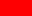
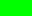
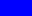
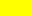
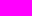
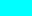
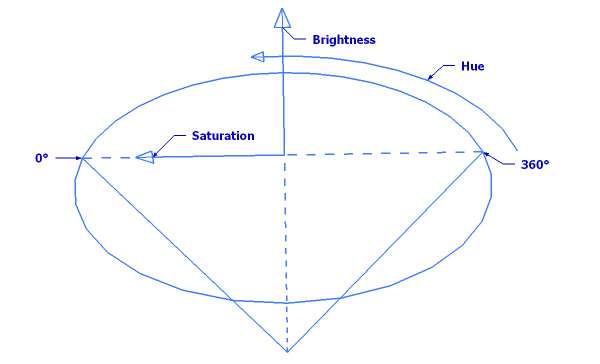

To know about imaging processing¶
The pixels mystery¶
An (raw) image is composed from pixels as you know.
Every pixel can be encoded on:
Basic pixel encoding¶
On a single value between 0 and 255: This is the case of gray images.
In this case every pixel can take a value from 0 (black) to 255 (white).
To create every grayscale range value.
On 3 or 4 channels of colors for every pixel.
These channels are:
The red channel which can take a value between 0 (black) and 255 (fully red).
The green channel which can take a value between 0 (black) and 255 (fully green).
The blue channel which can take a value between 0 (black) and 255 (fully blue).
And a optional fourth channel can add an opacity value: which can take a value between 0 (fully transparent) and 255 (fully opaque):
What mean that the image can contains fully transparent pixels, what permit to display a form which according per example your desktop background.
For every pixel: so the pixels are encoded on 3 or 4 values between 0 and 255 representing the red, green, blue and optionnaly alpha channel values.
What give us the RGB(A) color space.
This is not very intuitive and this is not the way humans think about colors.
But the red, green and blue values combined together give us a wide gamut of different colors
256 × 256 × 256 = 16777216 (differents possible colors).Note
In fact, the human visual system is also based on the trichromatic perception of colors.
With cone cell sensitivity located around the red, gren and blue spectrum.
This is the common pixel encoding in digital imaging.
examples:
A fully red pixel will take following values:
Channel Red Green Blue Value 255 0 0 Resulting color:
Note
Red is a base color because only one channel is set.
A fully green pixel will take following values:
Channel Red Green Blue Value 0 255 0 Resulting color:
Note
Green is a base color because only one channel is set.
A fully blue pixel will take following values:
Channel Red Green Blue Value 0 0 255 Resulting color:
Note
Blue is a base color because only one channel is set.
A fully yellow pixel will take following values: We mix red and green to obtain yellow color.
Channel Red Green Blue Value 255 255 0 Resulting color:
Note
Yellow is a composite color because 2 differents channels are set.
A fully pink pixel will take following values: We mix red and blue to obtain pink color.
Channel Red Green Blue Value 255 0 255 Resulting color:
Note
Pink is a composite color because 2 differents channels are set.
A fully turquoise pixel will take following values: We mix the green and blue to obtain the turquoise color.
Channel Red Green Blue Value 0 255 255 Resulting color:
Note
Turquoise is a composite color because 2 differents channels are set.
A emboss gray pixel encoded on RGB (Red, Green, Blue) look’s like this:
Channel Red Green Blue Value 127 127 127 Resulting color:
Note
Gray is a composite color because the 3 channels are set.
Gray can be encoded on a single value: a 1 byte encoding.
Other pixels encoding¶
Otherwise they are other image coding system’s: the phenomenal color spaces.
Which are based on the concept of
- Hue.
- Saturation.
- And brightness.
These properties are more intuitive for humans.
The phenomenal color spaces have been introduced because they correspond to the way humans tend to naturally organized colors.
With atributes like:
- Tint.
- Colorfullness.
- And brightness.
Hue: represent the dominant color.
The name you give to a color correspond to the hue value.
The hue value varies from 0 to 180 by representing the dominant color on a circle (0-360 degrees) which value is divide per 2 for encoding convienence.
or in others words the hue represent the tint of the color.
Saturation: represent how vivid the color is.
The saturation varies from 0 to 255 (pure spectrum color).
The saturation represent the vivid of the colors:
- Low value : pastel color.
- High value : rainbow color.
max(red, green, blue) - min(red, green, blue) Saturation = --------------------------------------------- max(red, green, blue)
Brightness: represent the luminosity of a color.
This is an subjectiv attribute.
Note
Others phenomenal color spaces values use the concept of value or lightness as a way to charaterize the relativ color intensity.
Note
This colors attributes try to mimic the intuitive human pereption of colors.
Example: the HSB color space.

- The hue is the cone top circle.
- The brightness is the cone height.
- The saturation value depends from the length of the arrow which must ne oriented into the direction of the hue value.
The Convolution kernels¶
A kernel is a set of weights which determine how each output pixel is calculated from a neighborhood of input pixels.
Applying a kernel filter consist of moving the kernel over each pixel of an image and multiplying each corresponding pixel by it’s associated weight.
According to that the central pixel correspond to a pixel of interest and the others to the neighborhood pixels.
The kernel is an odd matrix of values from any (odd) size limited from 3x3 to 31x31 and can be from different forms:
Kernels forms¶
A square type kernel matrix:
1 1 1 1 1 1 1 1 1 1 1 1 1 1 1 1 1 1 1 1 1 1 1 1 1
A diamond type kernel matrix:
0 0 1 0 0 0 1 1 1 0 1 1 1 1 1 0 1 1 1 0 0 0 1 0 0
A cross type kernel matrix:
0 0 1 0 0 0 0 1 0 0 1 1 1 1 1 0 0 1 0 0 0 0 1 0 0
An X type kernel matrix:
1 0 0 0 1 0 1 0 1 0 0 0 1 0 0 0 1 0 1 0 1 0 0 0 1
The art which the values are multiply depends from the operator which use the matrix, and the central pixel value depend from it.
The total summe of the matrix values represent the weight of the matrix and so we often adjust the value of the central pixel to make the total weight equal to:
1 or 0
but not always because it depends from how the value are interpolate:
Classical kernel matrixes¶
has a weight of +1 due of the 8 x -1 values and the central +9 value.
A Find Edges kernel matrix:
-1 -1 -1 -1 8 -1 -1 -1 -1
has a weight of 0 due of the 8 x -1 values and the central +8 value.
A Emboss kernel matrix:
-2 -1 0 -1 1 1 0 1 2
has a weight of +1 due of the (-2 + -1 + 1) and (2 + 1 + 1) values and the central 1 value.
A Mean kernel matrix:
1/9 1/9 1/9 1/9 1/9 1/9 1/9 1/9 1/9
has a weight of +1 du of the fact that all values are equal to 1.0 divide per kernel size.
A Gaussian kernel matrix:
is based on a gaussian vector: a vector of values seed from a sigma value.
example from a gausssian vector from size 7 with 1.2 as sigma value:
[ 0.015, 0.083, 0.236, 0.333, 0.236, 0.083, 0.015 ]
A Kirsch kernel matrix:
Have an orientation:
East orientation:
-3 -3 5 -3 0 5 -3 -3 5
West orientation:
5 -3 -3 5 0 -3 5 -3 -3
North orientation:
-3 -3 -3 -3 0 -3 5 5 5
South orientation:
5 5 5 -3 0 -3 -3 -3 -3
A Sobel kernel matrix:
horizontally:
-1 -2 -1 0 0 0 1 2 1 Vertically:
-1 0 1 -2 0 2 -1 0 1
A Laplacian kernel matrix:
0.5 1.0 0.5 1.0 6 1.0 0.5 1.0 0.5
Thresholding¶
The use of thresholding can be used to obtain a binary image (black and white image) by setting a value: the threshold value.
In relationship to this value, all pixels values (encoded on a single value) greater as this value are set to white.
All pixels littler are set to black.
What produce a binary image map of the source image.
Note
Thresholding can be invert so that greater values are set to black and littler are set to white.
What permit to get a White and a Black version of the filters producing a binary image.
It exist algorithms which can determine the best threshold value based on the analysis of a grayscale image:
- OTSU algorithm. (As in the Binary White OTSU or Binary Black OTSU filters.)
- TRIANGLE algorithm. (As in the Binary White TRIANGLE or Binary Black TRIANGLE filters.)
Note
You can take the average value from this 2 algorithms computed threshold values
As in the Binary White Average or
the Binary Black Average filters.
Binary images¶
Binary images are strictly black and white images with as convention that:
The foreground from the image is represented in white.
The background from the image is represented in black.